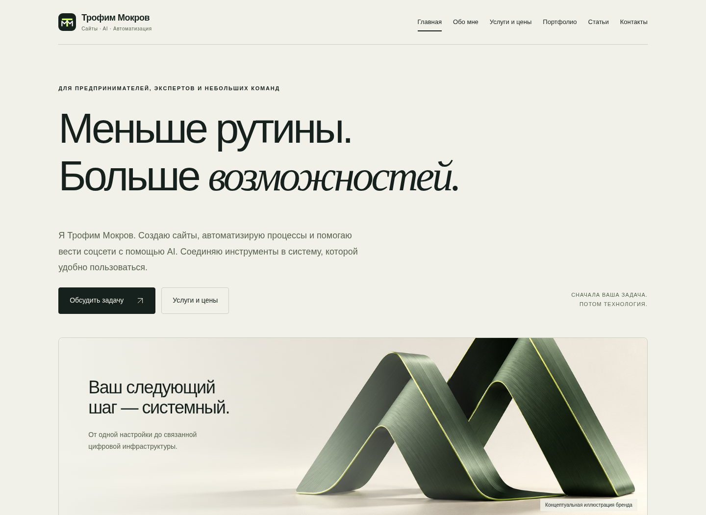

Здесь — проекты с описанием задачи и выполненной работы. В каждом проекте указаны мой вклад и границы подтверждённых результатов.
Клиентский проект · разработка сайта
Сайт Ксении — ZEMLYANOVVA EPOXY
Сайт авторских столов из натурального дерева и эпоксидной смолы. Визуальная подача материалов и работ, знакомство с мастерской и переход к обсуждению заказа.
Представить работы Ксении в индивидуальном стиле и помочь посетителю познакомиться с изделиями и связаться с автором.
Что сделано
Разработан сайт с выразительным первым экраном, коллекцией работ, галереей и разделом обсуждения проекта. Авторство разработки подтверждено Трофимом.
Инструменты
HTML, CSS и JavaScript. В исходниках предусмотрены интерактивная галерея и подключение формы Битрикс24; отправка заявок в рамках этого разбора не проверялась.
Результат
Подготовлен сайт с отдельным публичным адресом. Скриншот сделан из локальной копии исходников; внешний адрес в этой среде недоступен. Показатели заявок и продаж не оценивались.
Клиентский проект · вклад со слов автора
«Древесный замысел»: площадки, контент и инструменты
Помощь проекту в оформлении цифровых площадок, подготовке публикаций и настройке рабочих инструментов.
Направления работы в проекте
Оформление площадокПосты и публикацииСайт и инструменты
Схема участия автора, а не скриншот интерфейса или подтверждение коммерческих результатов.
Организовать присутствие проекта на нескольких площадках и поддерживать публикацию контента.
Что сделано
Оформление площадок и создание постов, публикации во ВКонтакте и MAX, настройка карт, помощь в создании сайта и настройке Битрикс. Роль — участие и помощь, а не единоличная разработка всей системы.
Инструменты
Telegram, ВКонтакте, MAX, карты, сайт и Битрикс. Конкретная версия Битрикс и архитектура сайта не уточнялись.
Результат
Описан фактический вклад в оформление, контент и настройку. Данных об охватах, заявках и продажах нет; рост показателей не заявляется.
Собственный проект
Этот сайт: создан вместе с AI-агентом
Собственный сайт — пример того, как я использую искусственный интеллект для создания и постепенного развития цифрового проекта.

Трофим Мокров
Задача
Объяснить несколько направлений работы без перегруженного первого экрана и дать посетителю ясные ориентиры по стоимости.
Что сделано
С помощью AI-агента созданы структура, дизайн, страницы, статьи и мобильная навигация. Изменения проверялись в браузере. Содержание и оформление постепенно дополняются.
Инструменты
AI-агент Codex, HTML, CSS, JavaScript и генератор на Python без внешних зависимостей.
Результат
Реализован многостраничный сайт. Коммерческие показатели и результаты привлечения клиентов пока не измерялись.
Пробная задача
Познакомимся с работой на небольшой задаче.
Вы увидите мой подход и конкретный результат, прежде чем решать, нужен ли вам следующий этап.
1. Выбираем небольшой результат
Что можно обсудить:
Один экран или небольшой блок будущего сайта
Один текст или визуальный материал для вашего контента
Прототип одного сценария автоматизации на тестовых данных
Настройка одной функции приложения с короткой инструкцией
Меню и один сценарий Telegram-бота на тестовых данных
2. Согласуем условия
Объём, срок, стоимость и критерии результата согласуем индивидуально до начала работы. Заявка — это предложение обсудить задачу, а не автоматический запуск работ.
После согласованного этапа вы решаете, продолжать ли сотрудничество. Заказывать полный проект или следующий этап необязательно.
3. По желанию — кейс в портфолио
Можно обсудить оформление результата как кейса для моего портфолио. Публикацию, конкретные материалы, имя и данные согласуем отдельно после работы. Можно работать без публикации.
Оставьте заявку в Telegram-боте или напишите лично. Опишите задачу и желаемый результат — обсудим подходящий объём, стоимость и сроки до начала работы.